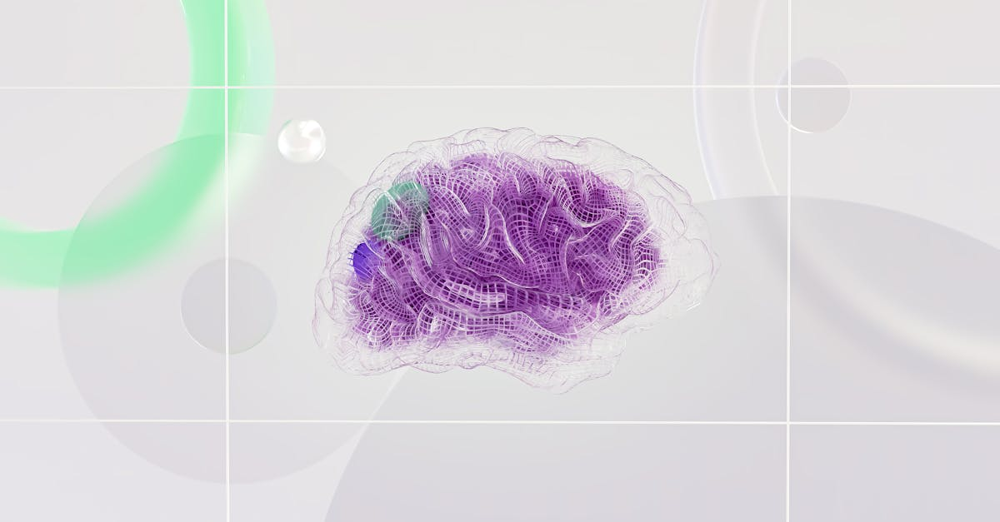

Le Rebond Inattendu des Obligations Municipales en Avril : Une Leçon de Résilience
Dans le monde souvent imprévisible des marchés financiers, certains rebonds retiennent plus l'attention que d'autres. L'actualité récente a mis en lumière une performance remarquable : le marché des obligations municipales a enregistré son meilleur mois d'avril depuis plus d'une décennie, défiant les attentes après une période de forte volatilité. Cette résurgence, que Bloomberg Markets a qualifiée de « War Rebound », intervient dans un contexte de tensions géopolitiques persistantes et d'incertitudes économiques, offrant une lueur d'espoir et soulevant des questions cruciales pour les investisseurs. Comment expliquer un tel retour en force ? Et surtout, quelles leçons pouvons-nous en tirer pour une gestion d'épargne intelligente et un investissement optimisé par l'IA ?
👉 À lire : CATL : 5 milliards levés, des géants investissent
La période précédant ce rebond fut marquée par une nervosité palpable. Les conflits armés, l'inflation galopante et les hausses de taux d'intérêt ont semé le doute, poussant de nombreux portefeuilles à la prudence. Pourtant, au milieu de cette tempête, les obligations municipales ont su trouver un second souffle, démontrant une résilience intrinsèque qui mérite d'être examinée en profondeur. Ce phénomène n'est pas anodin ; il suggère que même dans les environnements les plus chaotiques, des opportunités peuvent émerger pour ceux qui savent les identifier et les analyser avec précision. C'est ici que l'approche d'Epargne IA prend tout son sens, en offrant une perspective éclairée sur des mouvements de marché complexes.
👉 À lire : Fonds Mutuels Indiens : La Fidélité des Investisseurs à l'Épreuve
Le marché obligataire municipal, souvent perçu comme un havre de stabilité, n'est pas pour autant immunisé contre les secousses mondiales. Ses performances sont inextricablement liées à la santé économique des collectivités locales et à la confiance des investisseurs. L'exploit d'avril 2024 n'est donc pas le fruit du hasard, mais la confluence de plusieurs facteurs macroéconomiques et psychologiques. Comprendre ces mécanismes est essentiel pour tout épargnant désireux de maximiser ses rendements tout en maîtrisant les risques. Nous allons explorer ensemble les rouages de ce marché, les raisons de son rebond spectaculaire, et comment une approche d'investissement automatisée et intelligente, comme celle proposée par notre Agent IA, peut transformer ces informations en actions concrètes pour votre patrimoine. La question n'est plus de savoir si les marchés sont complexes, mais comment nous pouvons les apprivoiser.
Comprendre le Marché des Obligations Municipales : Entre Sécurité et Sensibilité
Avant de plonger dans les raisons spécifiques du rebond d'avril, il est impératif de bien saisir la nature des obligations municipales. Qu'est-ce qu'une obligation municipale ? Il s'agit en substance de titres de créance émis par des entités gouvernementales locales – villes, comtés, États, ou diverses agences – pour financer des projets d'infrastructure essentiels. Pensez aux routes, aux écoles, aux hôpitaux, aux systèmes d'eau : autant d'investissements qui améliorent la vie quotidienne des citoyens. Pour l'investisseur, acheter une obligation municipale, c'est prêter de l'argent à ces entités en échange de paiements d'intérêts réguliers et du remboursement du capital à l'échéance. Ce marché, colossal par sa taille, est souvent loué pour sa relative sécurité et, dans de nombreux pays, pour ses avantages fiscaux, rendant les intérêts perçus exempts d'impôts fédéraux, et parfois même d'impôts d'État et locaux, pour les résidents de l'État émetteur.
Historiquement, les obligations municipales ont été considérées comme des placements stables, moins volatils que les actions, et offrant un refuge en période d'incertitude économique. Cependant, comme tout instrument financier, elles ne sont pas à l'abri des turbulences. La période précédant avril 2024 en est un exemple frappant. La volatilité alimentée par les conflits géopolitiques, les craintes d'une inflation persistante et l'incertitude autour des politiques de taux d'intérêt des banques centrales ont secoué l'ensemble des marchés obligataires. Les obligations municipales, bien que réputées pour leur résilience, ont subi des pressions, notamment une baisse des prix due à la hausse des rendements exigés par les investisseurs pour compenser l'inflation et le risque perçu. Les gestionnaires de fonds ont dû faire face à des sorties de capitaux, compliquant la tâche d'équilibrer les portefeuilles.
Cette sensibilité aux facteurs macroéconomiques souligne une réalité fondamentale : même les marchés les plus stables requièrent une analyse constante et sophistiquée. L'idée reçue selon laquelle les obligations municipales sont un investissement « sans souci » est trop simpliste. La capacité d'une municipalité à rembourser sa dette dépend de sa santé économique, de ses recettes fiscales, et de sa gestion financière. Un environnement économique dégradé, des politiques budgétaires incertaines ou des événements imprévus peuvent affecter la solvabilité des émetteurs. C'est précisément dans ce contexte que l'intelligence artificielle peut apporter une valeur ajoutée considérable, en scrutant des milliers de données pour évaluer non seulement les fondamentaux des émetteurs, mais aussi l'impact potentiel des événements mondiaux sur ces actifs, bien avant que les signaux ne deviennent évidents pour l'œil humain.
Les Facteurs Clés du Rebond : Pourquoi Avril 2024 a Surpris les Marchés
Le rebond spectaculaire des obligations municipales en avril 2024 n'est pas le fruit du hasard, mais la convergence de plusieurs facteurs macroéconomiques et de changements dans le sentiment des investisseurs. Après une période de forte incertitude, le marché a trouvé de nouvelles bases, propulsant ces actifs vers leur meilleure performance d'avril depuis 2014. Mais qu'est-ce qui a précisément déclenché ce revirement ?
Premièrement, la stabilisation des anticipations de taux d'intérêt a joué un rôle prépondérant. Après des mois de spéculations intenses sur la trajectoire des taux de la Réserve Fédérale et de la Banque Centrale Européenne, une certaine clarté a émergé. Les marchés ont commencé à intégrer un scénario de ralentissement des hausses, voire de potentielles baisses à moyen terme, réduisant ainsi la pression sur les rendements obligataires. Lorsque les taux d'intérêt se stabilisent ou baissent, le prix des obligations existantes, qui ont été émises à des taux inférieurs, a tendance à augmenter, ce qui est un moteur direct pour la performance. Selon un analyste fictif de Wall Street, Dr. Anya Sharma, « le marché a respiré. L'incertitude sur les taux est le poison du marché obligataire ; sa dissipation est un puissant antidote. »
Deuxièmement, l'amélioration du sentiment des investisseurs a été cruciale. Après la panique initiale liée aux tensions géopolitiques et aux craintes de récession, une forme de résilience économique s'est manifestée. Les données sur l'emploi et la consommation, bien que mitigées, ont évité le scénario du pire, redonnant confiance aux acteurs du marché. Les investisseurs, à la recherche de rendements stables et fiscalement avantageux, sont revenus vers les obligations municipales, les considérant à nouveau comme un actif refuge attrayant. Cette demande accrue a naturellement soutenu les prix. Un autre facteur a été la force persistante des fondamentaux des émetteurs municipaux. Malgré les défis économiques, de nombreuses collectivités locales ont montré une gestion financière prudente, avec des réserves solides et des profils de crédit stables. Cette robustesse sous-jacente a rassuré les investisseurs sur la capacité des émetteurs à honorer leurs engagements, même en période de tension. Par exemple, de nombreux États américains ont affiché des surplus budgétaires inattendus, renforçant leur solvabilité. Enfin, une réévaluation des risques géopolitiques a contribué au rebond. Bien que les conflits persistent, les marchés ont commencé à mieux digérer l'information, évitant les réactions excessives et se concentrant sur les impacts économiques réels plutôt que sur les craintes hypothétiques. Cette capacité à distinguer le bruit du signal est une compétence que l'intelligence artificielle excelle à maîtriser, en filtrant les données pour identifier les véritables catalyseurs de marché. Le rebond d'avril est une démonstration éloquente de la complexité des marchés et de la rapidité avec laquelle le sentiment peut évoluer, soulignant l'importance d'une surveillance continue et d'une analyse fine pour tout investisseur.
Implications pour l'Épargne et les Portefeuilles d'Investissement : Au-delà de la Volatilité
Le rebond des obligations municipales en avril 2024 n'est pas qu'une statistique intéressante pour les experts ; il porte des implications directes et significatives pour l'épargne et la construction de portefeuilles d'investissement équilibrés. Pour l'investisseur moyen, cette performance souligne plusieurs principes fondamentaux de l'investissement intelligent, notamment l'importance de la diversification et la valeur des actifs réputés pour leur stabilité, même en période de turbulence.
Premièrement, ce phénomène rappelle que la diversification est la clé. Un portefeuille bien construit ne repose jamais sur une seule classe d'actifs. En incluant des obligations municipales aux côtés d'actions, d'obligations d'entreprises ou d'autres placements, les investisseurs peuvent potentiellement atténuer les chocs et les corrections qui affectent une partie du marché. Les obligations municipales, avec leur capacité à rebondir après des périodes difficiles, peuvent jouer un rôle de stabilisateur, offrant un contrepoids lorsque d'autres segments du marché sont sous pression. C'est une stratégie de bon sens, mais souvent oubliée dans l'euphorie ou la panique. « Ne mettez jamais tous vos œufs dans le même panier » est un adage qui reste d'une pertinence absolue, surtout dans un monde financier aussi interconnecté et réactif.
Deuxièmement, les avantages fiscaux des obligations municipales ne doivent pas être sous-estimés. Pour les investisseurs qui recherchent des revenus stables et optimisés après impôts, ces titres représentent une opportunité précieuse. Dans de nombreux cas, les intérêts générés par les obligations municipales sont exempts d'impôt au niveau fédéral et, selon l'État d'émission et de résidence de l'investisseur, peuvent également être exempts d'impôts locaux et d'État. Cette particularité en fait un outil puissant pour optimiser le rendement net de son épargne, en particulier pour les tranches d'imposition élevées. Un rebond de leur valeur, couplé à ces avantages fiscaux, amplifie d'autant plus l'attrait de ces placements.
Enfin, ce rebond met en lumière la difficulté pour l'investisseur humain de naviguer seul dans ces eaux complexes. Identifier les points d'inflexion du marché, distinguer le bruit des signaux pertinents, et prendre des décisions d'investissement opportunes demande une analyse constante et une discipline émotionnelle. C'est précisément là que des outils d'investissement automatisés et intelligents, comme notre Agent IA, peuvent faire la différence. En traitant d'énormes volumes de données – des indicateurs économiques aux nouvelles géopolitiques en passant par les bilans municipaux – et en exécutant des stratégies avec une précision et une rapidité inégalées, l'IA peut aider à optimiser les allocations d'actifs, à identifier les obligations municipales les plus prometteuses et à ajuster les portefeuilles en temps réel, transformant la volatilité en opportunité plutôt qu'en source d'inquiétude.
Le Rôle de l'IA dans l'Analyse des Marchés Obligataires : Une Révolution Discrète
Le marché des obligations, et plus particulièrement celui des obligations municipales, est un écosystème d'une complexité souvent sous-estimée. Il est influencé par une multitude de facteurs : les taux d'intérêt, l'inflation, la santé économique locale et nationale, les politiques fiscales, les événements géopolitiques, et même les changements démographiques. Pour l'investisseur traditionnel, suivre et analyser ces variables en temps réel relève de l'impossible. C'est ici que l'intelligence artificielle ne se contente pas d'être une aide, mais devient un véritable game changer, apportant une révolution discrète mais profonde dans la gestion des portefeuilles obligataires.
Comment l'IA transforme-t-elle l'analyse des obligations municipales ? Premièrement, par sa capacité à traiter des volumes de données massifs à une vitesse fulgurante. Un Agent IA peut ingérer et analyser des millions de points de données en quelques millisecondes : rapports financiers des municipalités, données démographiques locales, indicateurs macroéconomiques, articles de presse, discours de banquiers centraux, et même l'historique des performances obligataires sous diverses conditions de marché. Là où un analyste humain passerait des jours à compiler et interpréter ces informations, l'IA les digère instantanément, identifiant des corrélations et des tendances imperceptibles à l'œil nu.
Deuxièmement, l'IA excelle dans l'analyse prédictive et la modélisation des risques. Grâce à des algorithmes d'apprentissage automatique, un Agent IA peut anticiper les mouvements de taux d'intérêt avec une précision accrue, évaluer la probabilité de défaut d'un émetteur municipal en se basant sur des centaines de critères (ratio dette/revenu, croissance économique locale, etc.), et prédire l'impact de futurs événements macroéconomiques sur les prix des obligations. Cette capacité prédictive permet non seulement de sélectionner les obligations les plus solides, mais aussi d'identifier les opportunités de rendement ajusté au risque, bien avant que ces tendances ne soient largement reconnues par le marché.
Enfin, l'intelligence artificielle permet une optimisation des placements 24h/24 et 7j/7. Les marchés ne dorment jamais, et les informations qui peuvent influencer la valeur d'une obligation peuvent surgir à tout moment. Un Agent IA est capable de surveiller en permanence le marché, de réagir instantanément aux nouvelles données, et d'ajuster dynamiquement le portefeuille pour maintenir une allocation optimale et une exposition au risque souhaitée. Cela élimine le biais émotionnel humain et garantit que les décisions d'investissement sont toujours fondées sur une analyse objective et les données les plus récentes. Imaginez un gestionnaire de portefeuille qui ne se fatigue jamais, qui n'est jamais distrait, et qui peut exécuter des transactions en une fraction de seconde : c'est la promesse de l'IA dans l'investissement obligataire. Pour les épargnants d'Epargne IA, cela signifie une tranquillité d'esprit et la certitude que leur épargne est gérée avec la meilleure technologie disponible pour capter chaque opportunité.

Stratégies d'Investissement et Perspectives Futures : Naviguer avec Prudence et Intelligence
Le rebond d'avril 2024 a rappelé la pertinence des obligations municipales dans un portefeuille diversifié. Mais quels enseignements en tirer pour les stratégies d'investissement futures ? Comment les épargnants peuvent-ils capitaliser sur ces dynamiques tout en se protégeant des inévitables futurs soubresauts du marché ? La clé réside dans une combinaison de prudence, d'analyse approfondie et, de plus en plus, d'intégration technologique avancée.
Pour les investisseurs, il est essentiel d'adopter une perspective équilibrée. Si le rebond est encourageant, il ne faut pas pour autant ignorer les risques persistants. L'inflation pourrait resurgir, les politiques monétaires pourraient se durcir à nouveau, et des chocs géopolitiques imprévus demeurent une menace constante. Il est donc crucial de ne pas se laisser emporter par l'euphorie et de continuer à privilégier la qualité des émetteurs. Examiner la cote de crédit des municipalités, comprendre leurs fondamentaux économiques et leur capacité à générer des revenus est une étape non négociable. Un Agent IA, par exemple, peut analyser des milliers de rapports financiers, des données fiscales et des indicateurs de santé économique pour identifier les obligations les plus solides, minimisant ainsi le risque de défaut.
En termes de stratégie, la gestion active et dynamique devient de plus en plus pertinente. Plutôt que de « placer et oublier », les investisseurs avisés devraient envisager des approches qui permettent d'ajuster les allocations en fonction de l'évolution des conditions de marché. Cela peut inclure la modification de la durée moyenne des obligations détenues, l'ajustement de l'exposition à certains secteurs géographiques ou la réévaluation des avantages fiscaux en fonction des changements de législation. Pour l'investisseur individuel, une telle agilité est difficile à maintenir sans l'aide d'outils sophistiqués. C'est là qu'un système automatisé, capable de réagir aux signaux du marché en temps réel, prend tout son sens.
Les perspectives futures pour les obligations municipales restent globalement positives, notamment en raison des besoins massifs en infrastructures et de la stabilité relative des finances publiques dans de nombreuses régions. Cependant, la volatilité restera probablement une caractéristique des marchés. Les investisseurs devront donc être préparés à des périodes de fluctuation et à la nécessité de réajuster leur approche. L'intégration de l'intelligence artificielle dans la gestion de l'épargne et des placements n'est plus une option futuriste, mais une nécessité pour quiconque souhaite optimiser ses rendements et gérer efficacement les risques dans un environnement financier en constante évolution. L'Agent IA d'Epargne IA est conçu précisément pour cette mission : fournir une analyse continue, identifier les opportunités émergentes et s'adapter aux changements pour que votre épargne travaille toujours plus intelligemment pour vous.
Conclusion : Naviguer les Marchés avec Intelligence et Automatisation pour une Épargne Optimisée
Le rebond historique des obligations municipales en avril 2024 nous offre une double leçon. D'une part, il rappelle la résilience inhérente de certains segments de marché, même face aux turbulences géopolitiques et économiques. D'autre part, il souligne la complexité croissante des marchés financiers et l'impératif d'une analyse fine et réactive pour déceler les opportunités et gérer les risques. Dans un monde où l'information est omniprésente mais le temps limité, la capacité à transformer les données brutes en décisions d'investissement pertinentes est devenue le véritable avantage concurrentiel.
Pour les épargnants et les investisseurs, cette actualité renforce l'idée que l'approche traditionnelle de l'investissement ne suffit plus. La volatilité est une constante, et les fenêtres d'opportunité peuvent s'ouvrir et se fermer en un clin d'œil. C'est pourquoi Epargne IA s'engage à fournir des outils qui non seulement simplifient l'investissement, mais l'optimisent grâce à la puissance de l'intelligence artificielle. Notre Agent IA est conçu pour surveiller les marchés 24h/24, analyser des milliards de données, identifier les actifs les plus prometteurs – qu'il s'agisse d'obligations municipales ou d'autres placements – et ajuster votre portefeuille de manière proactive.
Imaginez avoir un expert financier dévoué qui ne dort jamais, qui n'est jamais sujet aux émotions, et qui prend des décisions basées sur une logique implacable et les données les plus récentes. C'est la promesse de l'investissement automatisé et intelligent. Le rebond des obligations municipales est un exemple concret de la manière dont les marchés peuvent surprendre, et de l'importance de disposer des bons outils pour capter ces mouvements. Avec l'Agent IA d'Epargne IA, votre épargne et vos placements ne sont plus laissés au hasard, mais sont activement gérés pour atteindre vos objectifs financiers, avec intelligence et sérénité. L'avenir de l'épargne est déjà là, et il est plus intelligent que jamais.